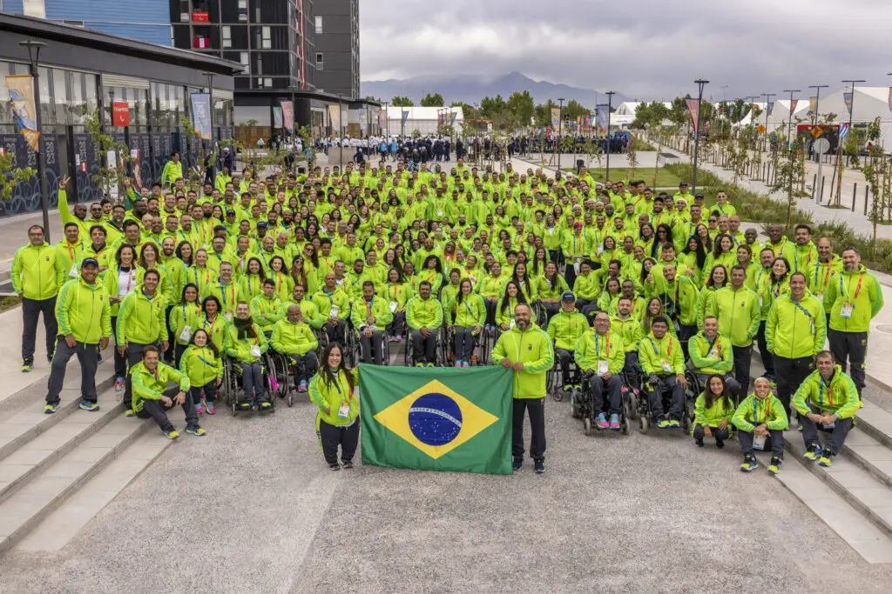

Brasil nas Paralimpíadas de Paris 2024
O Brasil enviou uma delegação de 280 atletas para os Jogos Paralímpicos de Paris 2024, a segunda maior da história do país, perdendo apenas para a edição do Rio 2016. Desses 280 competidores, 255 são atletas com deficiência, enquanto os demais são atletas-guia, calheiros da bocha, goleiros do futebol de cegos e um timoneiro de remo. Além disso, a delegação brasileira conta com 117 mulheres, sendo a edição com o maior número de atletas femininas do Brasil na história dos Jogos Paralímpicos
Lista com os 280 atletas
- Atletismo: 89
- Bocha: 12
- Canoagem: 8
- Ciclismo: 6
- Esgrima em cadeira de rodas: 7
- Futebol de cegos: 10
- Golbol - Feminino: 6
- Golbol - Masculino: 6
- Halterofilismo: 11
- Hipismo: 2
- Judô: 15
- Natação: 37
- Remo: 8
- Taekwondo: 6
- Tênis de Mesa: 15
- Tênis em Caderia de Rodas: 4
- Tiro com Arco: 5
- Tiro Esportivo: 2
- Triatlo: 4
- Voleibol Sentado - Feminino: 12
- Voleibol Sentado - Masculino: 12
Lista dos medalistas

O Brasil teve uma performance histórica nos Jogos Paralímpicos de Paris 2024! A delegação brasileira conquistou o maior número total de medalhas da sua história, superando as marcas anteriores de Tóquio 2020 e Rio 2016.
- Total de medalhas: 89
- Ouro: 25 (Recorde)
- Bronze: 38